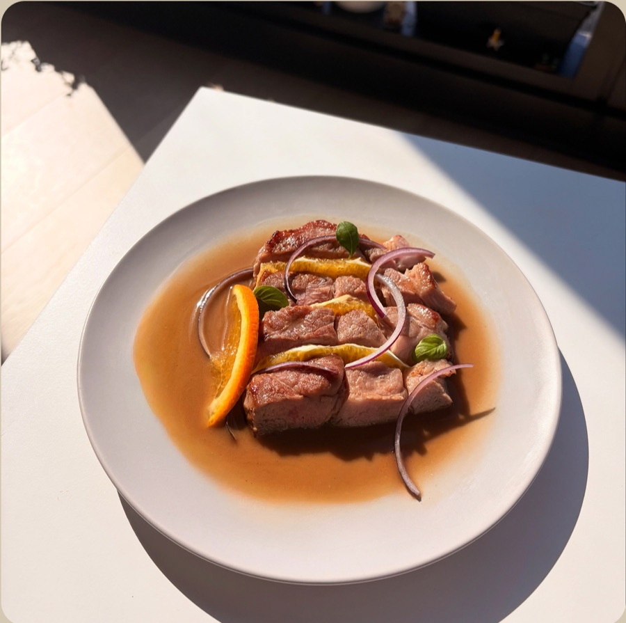
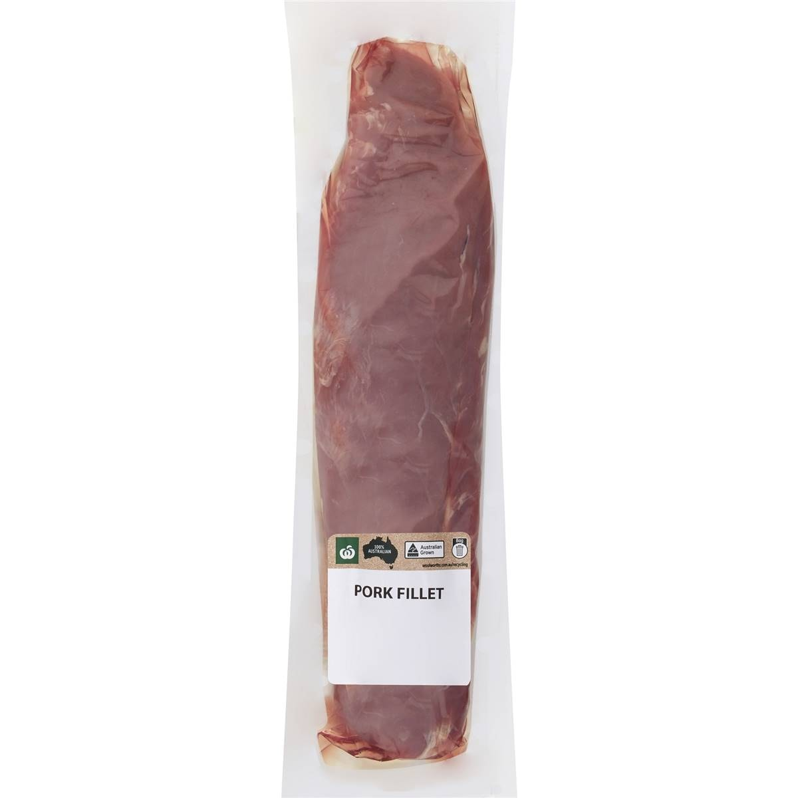
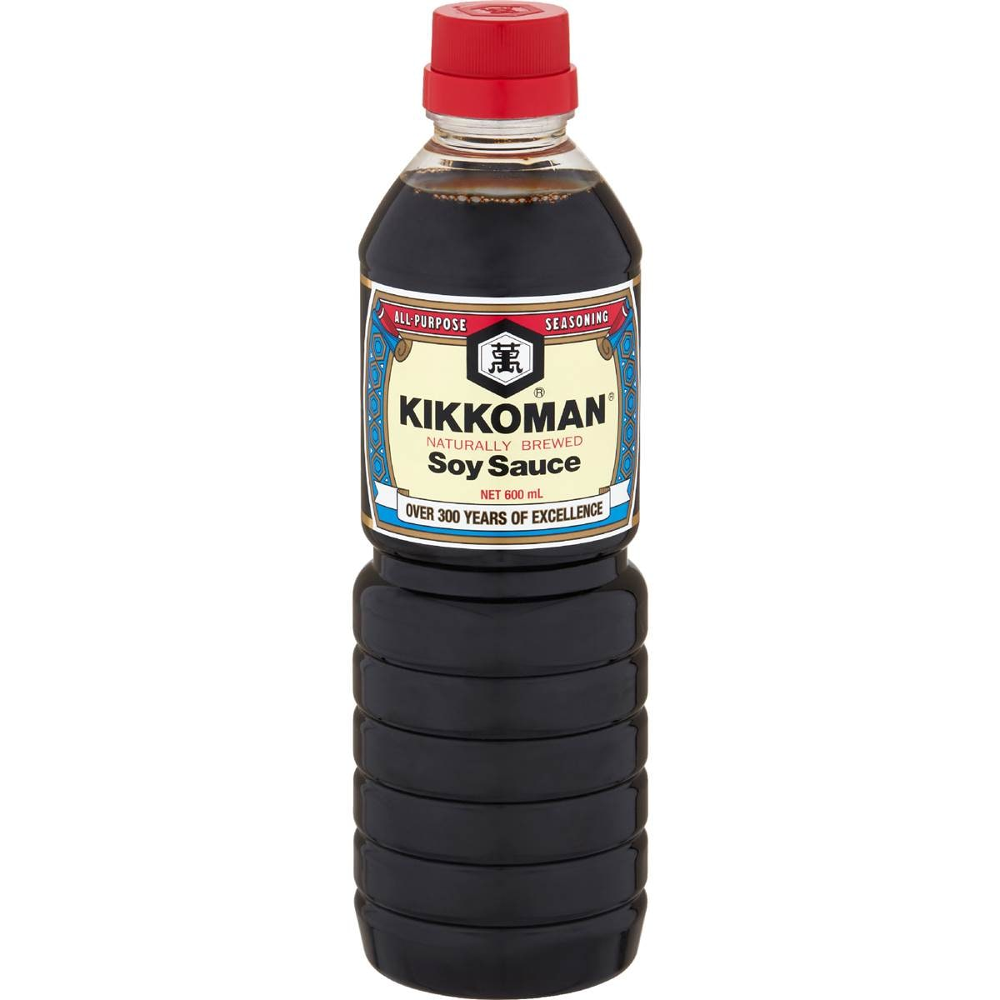
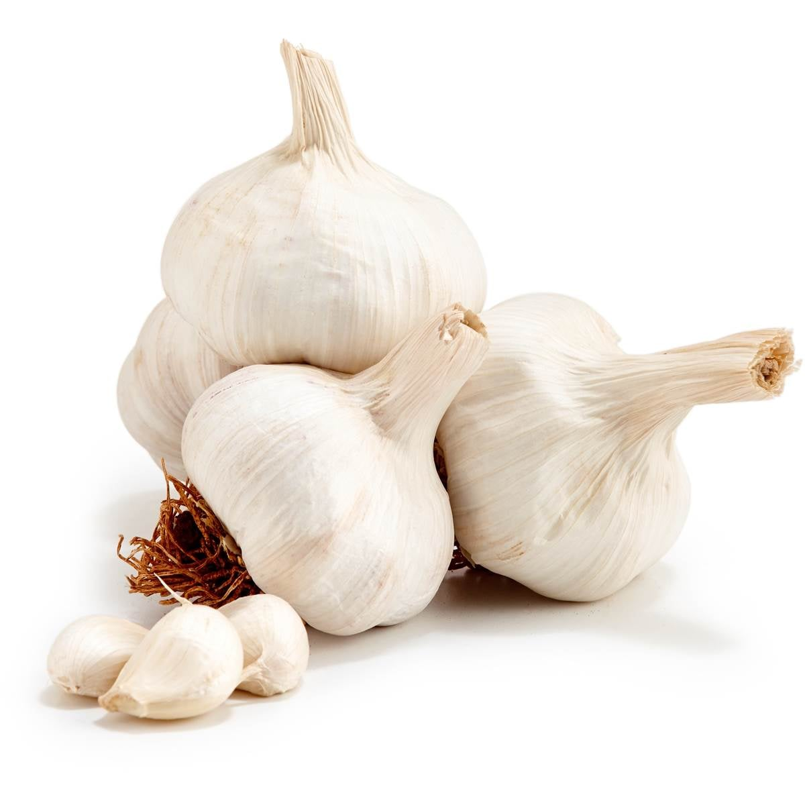
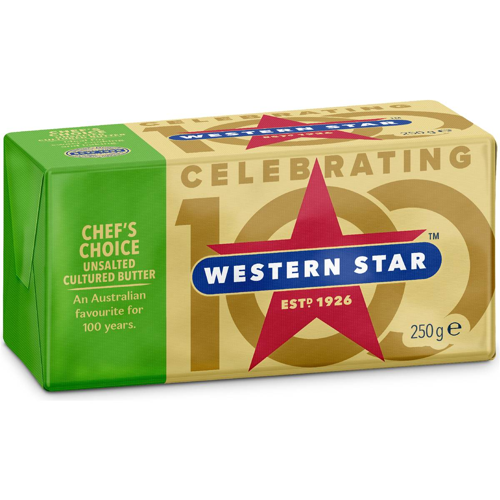
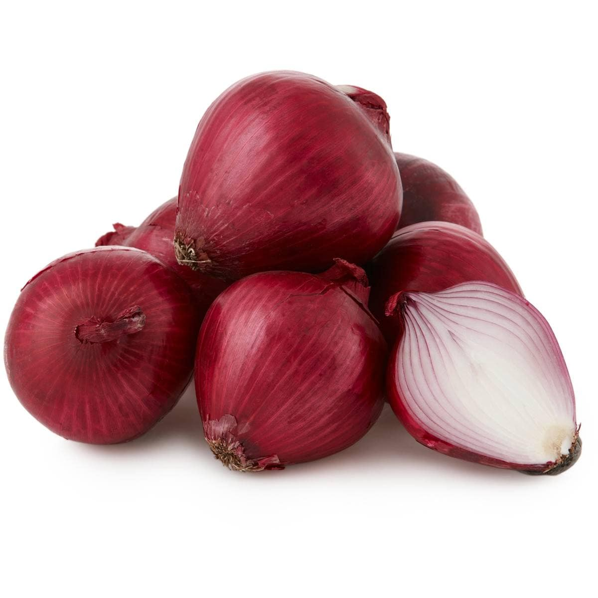
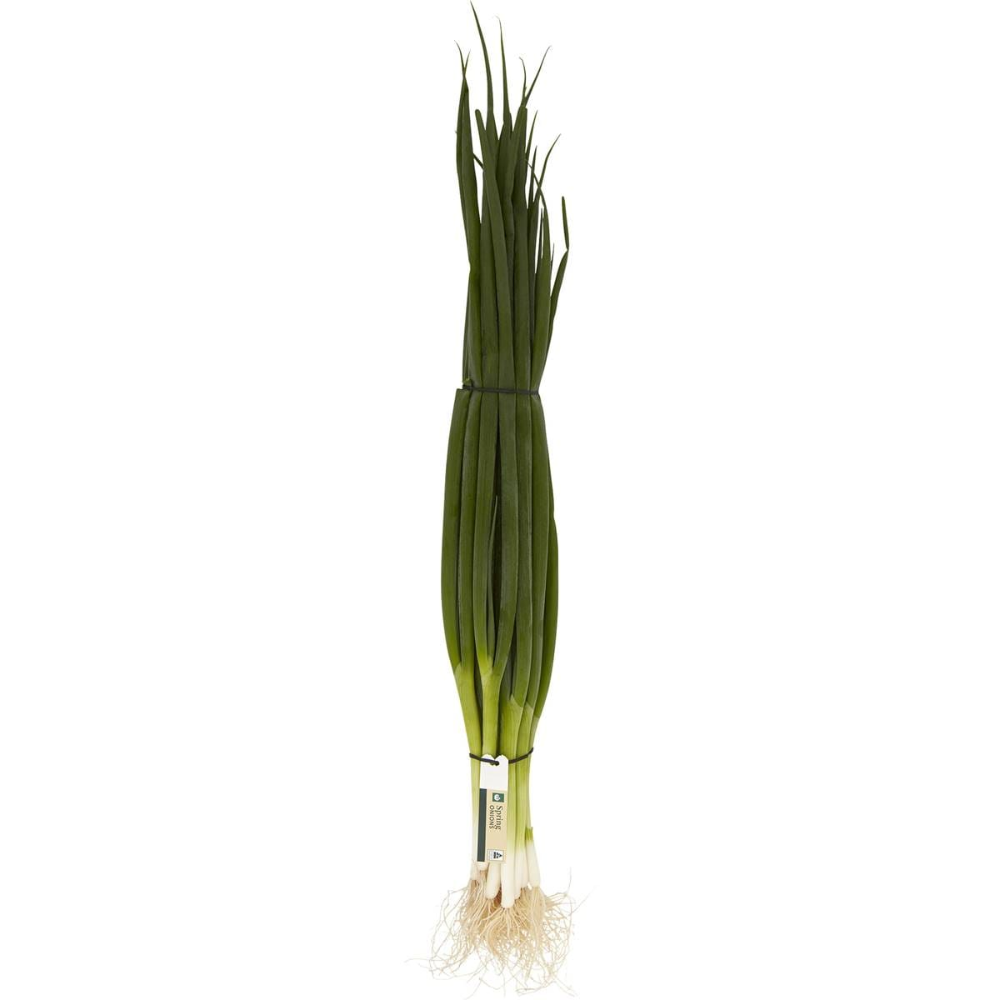

Seared Pork with Orange Sauce
Pork fillet seared golden, sliced and served in a glossy sweet-and-sour orange sauce with sharp red onion.

Pork fillet seared golden, sliced and served in a glossy sweet-and-sour orange sauce with sharp red onion.

1 pork fillet, about 400g
1 tbsp soy sauce
2 cloves garlic, crushed
20g butter
1/2 red onion, thinly sliced
1 spring onion, sliced, to serveDo not move the pork while it sears; it releases from the pan when the crust has formed. The resting juices on the board go straight into the sauce.